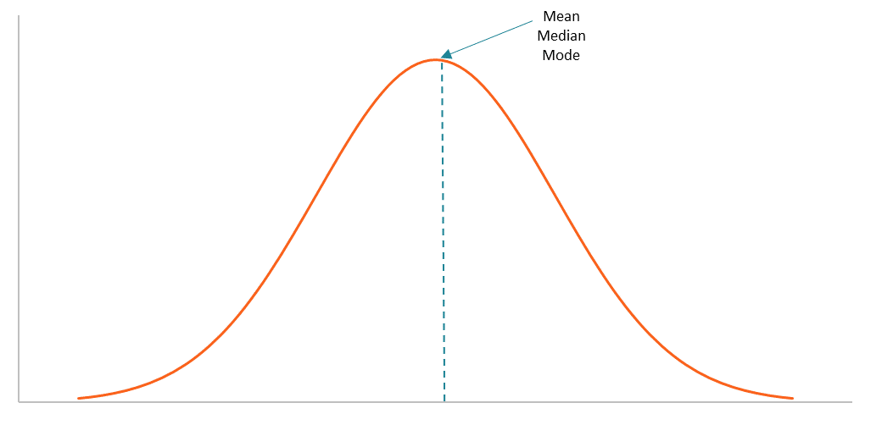

When I was little, I thought “average” was something I could be proud of, something that I could show off. I thought it meant that I was at least in the majority and that I wasn’t falling behind. However, as I grew up, the word “average” increasingly became a word that equated to “terrible” to me.
In our lives, we all want to succeed and be the best at something there is, and this mindset comes with the terrible byproduct that we aren’t satisfied with just being average. I came from a family that did not overly emphasize greatness and achievement, and it was through my own dedication and ambition that I pushed myself as hard as I did.
However, because of this, during the times when I felt like I needed an extra push, some motivating words to keep me going, I was instead met with contentment. My parents responded with pride and satisfaction at how much I accomplished, being happy even when I thought I didn’t achieve what I was truly capable of. This was something that I always battled with, something that always confused me.
I watched my peers be relentlessly pushed by their parents to achieve and strive for better, but my parents did not place those expectations on me and allowed me to choose what I wanted to pursue. It was freeing, but also lonely. I felt like my successes and achievements were only truly understood by me, and my ambition was only fueled by myself.
I realized that it was because being average was never something to be ashamed of. Sure, no matter how much I tried, I would never excel greatly in some activities that I wanted so very badly. No matter how much I trained, I could never quite reach the level of professional play that the stars on the big screen had. However, in the parts that I lacked, I made up for them in other areas. I had a knack for independence, for starting things myself, and for having that hunger to achieve something even if it doesn’t feel possible.
You can’t be good at everything, and before, this was something I thought was a problem. The best athletes you see, sure, they are the best of the best at their sports, but they are never the best at everything they do. They discovered what they were passionate about and were good at, and stuck with it.
Of course, being average in something does not mean that you have to stop trying. You do not need extraordinary natural talent to keep practicing something you care about. Effort can be meaningful without becoming a competition against everyone around you, and growth does not need to prove that you are better than someone else.
Something I never realized all those years ago, when I looked at my parents, eyes full of tears, confused about why they seemed happy that I was not excelling at a sport I poured all my effort into, was that it was okay to be average. You do not need to be the best in the world for all the hours of effort you put in. You don’t need to be on the top of the mountain to be able to look back and see how far you have come.
There will always be someone stronger than you, smarter than you, faster than you, and further ahead than you. But just because someone is ahead of you in the race doesn’t mean that the steps you take forward aren’t pushing you in the right direction.
Support
Resources & Support
If this story resonated with you, these resources may help support individuals struggling with perfectionism, comparison, burnout, academic pressure, self-worth, and mental health challenges.
Broad Shoulders Initiative is not a crisis service, medical provider, or therapy provider. If support feels urgent, please contact emergency services, a trusted adult, a school counselor, or a licensed professional.